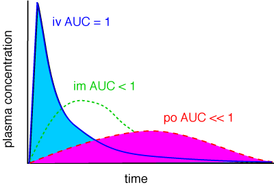

The bioavailability of a drug is the fraction of the dose given which finds it way into the systemic circulation. It should be noted that this is not necessarily equal to the fraction of the dose which is absorbed, since a drug might be absorbed, for example across the gastrointestinal lumen, but removed from the portal blood by the liver by metabolism before reaching the systemic circulation. Similarly, for topically applied drugs the skin is an organ of drug metabolism and might biotransform a drug already absorbed before it reaches the circulation. The same of course is true for drugs administered by any route other than a simple intravenous injection.
The bioavailability is calculated from the area under the plasma concentration / time curve and expressed as a proportion of the area under the iv curve, ie, if the area under the po curve is 20% of the area under the iv curve, the bioavailability is 0.2 or 20%.

Different formulations of the same drug are said to be bioeqivalent when they
are absorbed to a similar extent and at a similar rate, ie, the Cmax, Tmax
and AUC are similar. This technique is used when generic versions of drugs
just out of patent are being licensed, to avoid having to carry out expensive
efficacy and safety trials. Beware - some definitions of bioeqivalence only
cover the extent of absorption and not the rate. For an antibiotic, for instance,
if Cmax does not rise above the MIC, it is unlikely to work. There is also
a difference between “being similar” and “not being significantly
different from”. In the past, this sort of thing was only a concern to
the licensing authorities, but under the new deregulated system you might have
to make assumptions about bioequivalence yourself.

These two formulations of the same drug are obviously not bioequivalent.